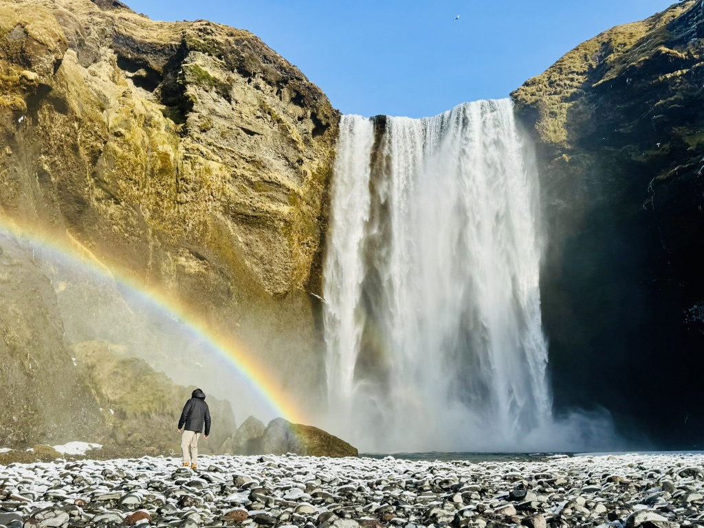
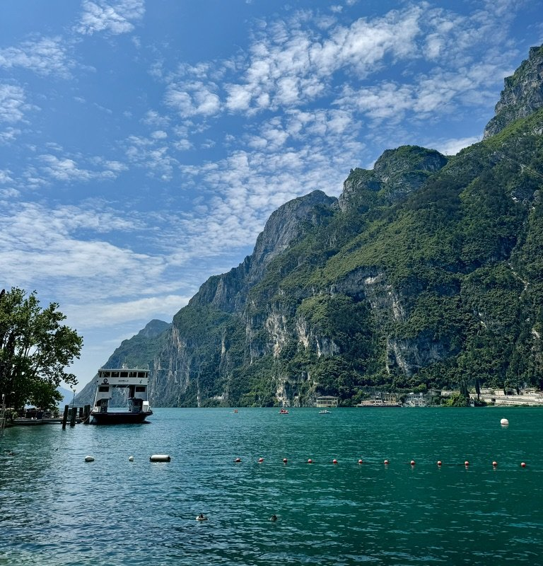
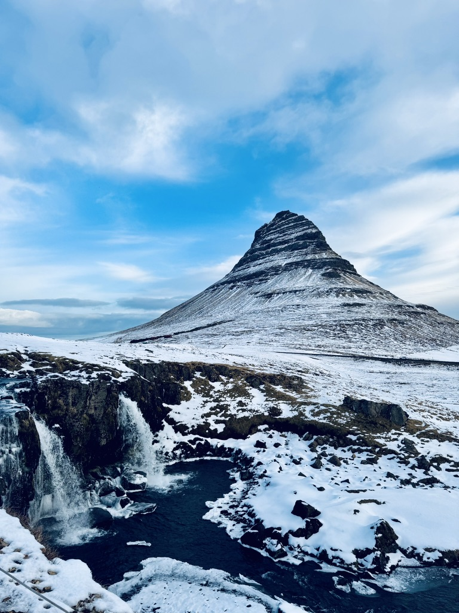

I am a Computer Science student at Syracuse University. My work is centered around Python and AI/LLM engineering. I have experience designing, developing, and deploying AI systems within production environments to support data teams and automate business functions using techniques such as prompt-engineering, retrieval-augmented generation (RAG), and agentic AI. I regularly work with frameworks and tools such as Langchain, LangGraph, AutoGen, OpenAI SDK, scikit-learn, PyTorch, pandas, FastAPI, and more. I also have hands-on experience deploying applications on AWS and utilizing many of its services (Lambda, S3, EC2, Fargate). I enjoy using Streamlit's API to build interactive data apps and chatbots that are accessible to both technical and non-technical users alike.
In data-intensive environments, I've worked with platforms such as Databricks and Dremio to support data processing, governance, and discoverability. Much of my work focuses on improving data quality, lineage, and discoverability- building systems that make large, complex datasets reliable and actionable. I am comfortable working in Agile software development environments and collaborating with cross-functional teams, contributing across the entire software development lifecycle. While my background is centered around data, I love to dive into all branches of software development, especially front-end and full-stack application development.
I currently work as an ML Research Assistant supporting Defense Advanced Research Projects Agency (DARPA) Semantics Forensics, where my research focuses on malicious applications of generative AI and synthetic media. My work involves designing Python data collection and web scraping pipelines to gather large-scale datasets from online platforms, which are then curated and used to train and evaluate machine learning models. I have applied deep learning frameworks (PyTorch) and large language models to classify bot-generated, and malicious phishing content, developing detection capabilities directly relevant to modern threats.
As part of the project's future scope, I am exploring expansion into audio-based detection capabilities, with the goal of extending these techniques to synthetic voice and audio. In conjunction, I am examining how agentic AI systems can be used in social engineering contexts, including the use of coordinated bots and agents to interact with real users, extract sensitive or behavioral information, and utilize that data for malicious use.
My team presents progress and findings bi-annually at the Syracuse Office of Undergraduate Research & Creative Engagement (SOURCE) Symposium.
Alongside my academic and technical work, I serve as a soldier in the New York Army National Guard, having enlisted in 2021 as a 12R Interior Electrician. During my time in the Guard, I served on numerous state active-duty missions, including emergency storm relief operations, where I served as a team-leader. I also competed in and won the 204th Engineer Battalion Best Warrior Competition, and was awarded the Army Achievement Medal.
My experience as an enlisted soldier in the Army ultimately inspired me to pursue service through leadership as a commissioned officer. In 2023, I began my college career and joined the Syracuse University Army ROTC program. Through ROTC, I was selected to attend Air Assault School at the United States Military Academy. I was also selected to serve as Cadet Company Commander during my MSIII year, responsible for leading and managing over 120 cadets. My ultimate goal is to branch Cyber in the U.S. Army as a 17A Cyber Warfare Officer, where I can combine my background in technology and service in defense of the nation's digital domain.
⸻
Beyond all this tech stuff, I love to pretend that I am a professional athlete :). I strongly believe that in order to take care of the mind, you must first take care of the body. Exercise- whether it be running, lifting, swimming, cycling or playing sports, like soccer, basketball, or golf- has always been a big part of my life and something I enjoy.
After playing soccer in high-school, I became especially hooked on endurance sports. I ran my first full marathon in April of 2025 and later ran my first World Marathon Major in October of 2025 (Chicago). Running, swimming, and cycling represent the constant internal battle we all face- sacrificing momentary comfort for what truly brings fulfillment and reward in life. As the great Eliud Kipchoge puts it, "Only the disciplined ones in life are free. If you are undisciplined, you are a slave to your moods and your passions". Life isn't a sprint, it's a marathon! (or a triathlon ;))
running the Chicago Marathon 2025 (i was dying ;))
I also have a passion for travel, the outdoors, and photography. I am very fortunate to have visited 26 countries, and 5 continents so far. The awe, excitement, and adrenaline of stepping foot somewhere completely new is what keeps me going day after day. My perspectives, thoughts, and worldview have all been shaped through my experiences traveling to different countries and getting to know people from all around the world. I especially love to surround myself in natural landscapes. I carry these memories with me through my passion for photography. A camera and tripod is all I need to take pictures that tell stories long after the adventure ends.